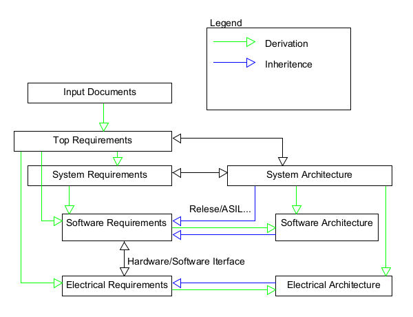

This document described what (process ) and how (methods) system engineering is done in project Process is based on https://www.automotivespice.com/fileadmin/software-download/Automotive_SPICE_PAM_30.pdf
1. Configuration Management
| UID: | PLAN-CM0 |
|---|---|
| Statement: |

|
| UID: | PLAN-CM1 |
|---|---|
| Statement: |
If not specified in requirement ASIL, CAL Level, Release, Variants are Inherited from system/software/electrical architecture linked to element |
2. System Process description
| UID: | PLAN-SYS1 |
|---|---|
| Statement: |
requirement |
| Comment: |
Activities and methods here described |
| Comment: |
After reading this you should know what and how to do this job |